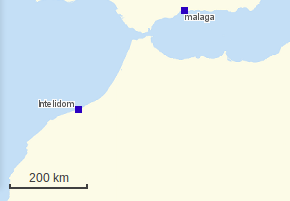
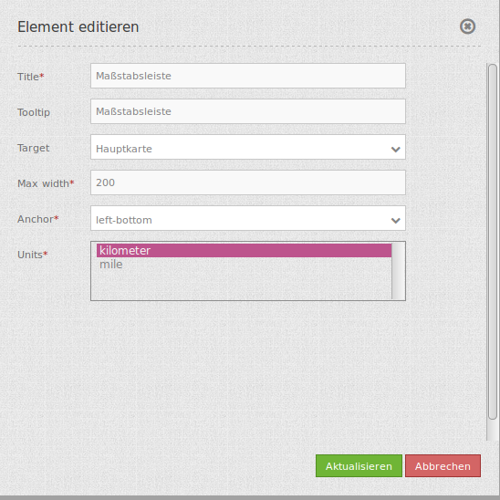

ScaleBar (Maßstabsleiste)¶
Die Maßstabsleiste ist eine schmale Linie, die den aktuellen Maßstab anzeigt.
{kind=link}
Konfiguration¶
{kind=link}
- Title: Titel des Elements. Dieser wird in der Layouts Liste angezeigt und ermöglicht, mehrere Button-Elemente voneinander zu unterscheiden. Der Titel wird außerdem neben dem Button angezeigt, wenn “Beschriftung anzeigen” aktiviert ist.
- Tooltip: Text, der angezeigt wird, wenn der Mauszeiger eine längere Zeit über dem Element verweilt.
- Target: ID des Kartenelements, auf das sich das Element bezieht.
- MaxWidth: Maximale Breite des Maßstabsbalkens, der Standardwert ist 200.
- Anchor: Ausrichtung des Maßstabsbalkens, der Standardwert ist ‘right-bottom’ (rechts unten).
- Units: Einheiten des Maßstabsbalkens, ‘kilometer’ und/oder ‘miles’
YAML-Definition:¶
tooltip: 'Scale Bar' # Text des Tooltips
target: ~ # ID des Kartenelements
anchor: 'inline'/'left-top'/ # Ausrichtung des Maßstabsbalkens, der Standardwert ist 'right-bottom' (rechts unten)
'left-bottom'/'right-top'/ # Benutzen Sie inline z.B. für die Sidebar
'right-bottom'
position: array('0px','0px') # Position des Maßstabsbalkens, der Standardwert ist: x=20px, y=20px
maxWidth: 200 # Maximale Breite des Maßstabsbalkens, der Standardwert ist 200
units: array('km') # Einheiten des Maßstabsbalkens, 'kilometer' und/oder 'miles' (ml), Standard ist ['km']
Class, Widget & Style¶
- Class: Mapbender\CoreBundle\Element\ScaleBar
- Widget: mapbender.element.scalebar.js
- Style: mapbender.element.scalebar.css
HTTP Callbacks¶
Keine.
JavaScript API¶
Keine.
JavaScript Signals¶
Keine.